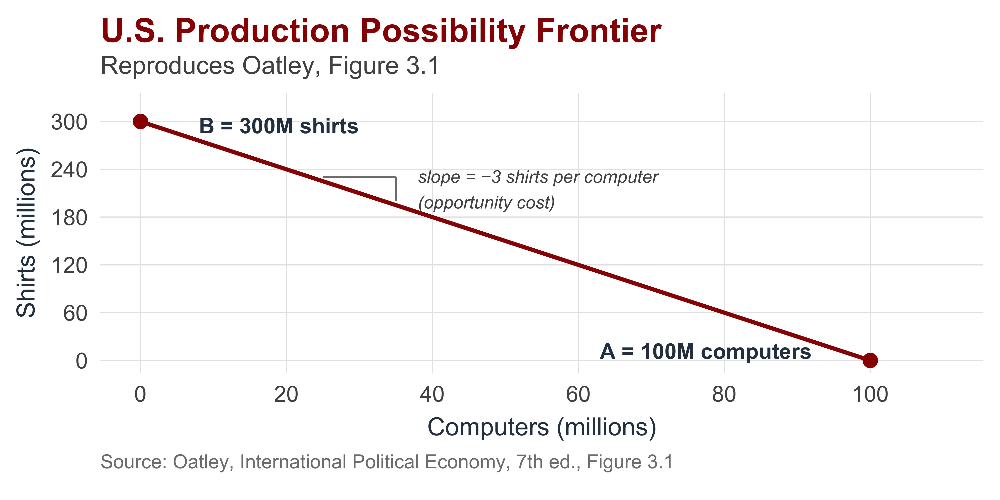
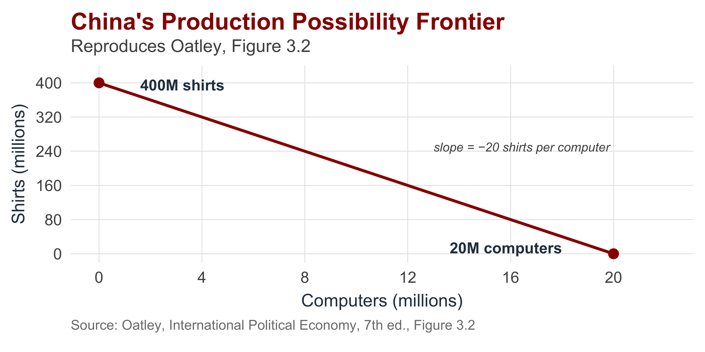
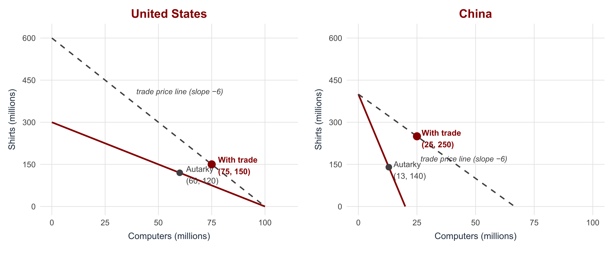
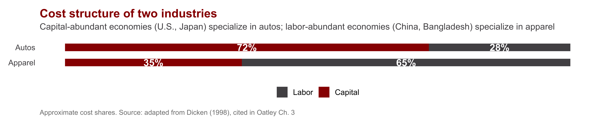
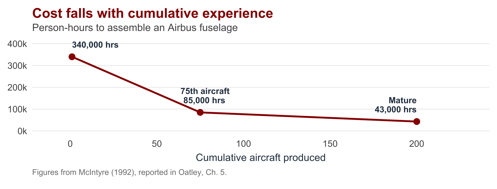
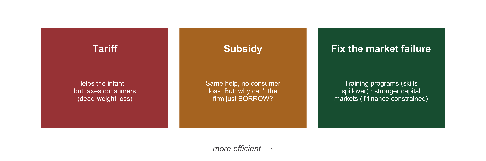

Global Development
INTL-I 522 | Day 8 — The Economic Case for Trade and the Case for State Intervention
Prof. Sarah Bauerle Danzman
September 23, 2026
Today’s Plan
Today’s Big Question
When does the economic case for free trade hold, and under what conditions can state intervention in the economy raise national welfare?
| Section | What we’ll cover |
|---|---|
| 1 · The Economic Case for Trade | Explain comparative advantage, the welfare cost of tariffs, and the model’s assumptions |
| 2 · The Case for State Intervention | Identify the two claims a state-centered account needs and the assumptions it relaxes |
| 3 · Infant Industries and Industrial Policy | Evaluate when temporary protection can raise welfare and which states can carry it out |
The Economic Case for Trade
Comparative Advantage
Every country gains from trade by specializing in what it produces relatively well, even if it produces everything at higher cost than its trading partner.
What is not required
- An absolute cost advantage in any good
- The United States gains from trading with China even if U.S. firms could produce every good more cheaply
What is required
- Different opportunity costs across the same goods
- Each country specializes in the good for which it gives up less of others
- Both countries consume beyond what autarky allowed
The Production Possibility Frontier
The PPF shows everything a country could produce, given its labor and capital.
Its slope is the opportunity cost: how much of one good must be given up to make one more of the other.
China Has a Different Frontier
Same logic, different opportunity costs — because China has different factor endowments (more labor, less capital).

Trade Lets Both Consume Beyond Autarky
The two countries agree on a trade price (here 6 shirts per computer).
Each fully specializes. Both consume on a higher indifference curve than autarky allowed.

Where Does Comparative Advantage Come From?
Ricardian model (Ricardo, 1817)
Comparative advantage comes from differences in labor productivity — i.e., technology.
Countries specialize where their technology gives them an edge.
Key insight: technology, not endowments, drives the pattern.
Heckscher-Ohlin (H-O) model (early 20th c.)
Comparative advantage comes from factor endowments — the relative supply of capital, labor, land.
- Capital-abundant countries → capital-intensive goods (autos, aircraft)
- Labor-abundant countries → labor-intensive goods (apparel)
Key insight: who owns the abundant factor wins from trade.

Trade Policy and Welfare
Standard introductory microeconomics. The left panel shows the welfare consequences of opening a closed economy to trade; the right panel shows how a tariff partially reverses them.
![Two side-by-side supply-and-demand diagrams. The left panel illustrates the welfare effects of opening a closed economy to trade: as the price falls from the autarky level P to the world price P_w, the consumer-surplus area expands. Area A represents surplus transferred from producers to consumers; area B represents new welfare created by trade. The right panel shows the effects of imposing a tariff that raises the domestic price from P_w to P_t. Area A is producer surplus gained from the tariff; area C is government tariff revenue; areas B and D are deadweight loss triangles (inefficient production and forgone consumption).](day08-trade-and-intervention_files/figure-revealjs/fig-welfare-1.png)
Opening to trade transfers area A from producers to consumers and creates area B as new welfare. A tariff partially reverses this: area A is transferred back to producers as new producer surplus, area C is collected by the government, and areas B and D are destroyed as deadweight loss.
What This Theory Assumes
The standard comparative-advantage argument rests on three contested assumptions:
Market clearing
Prices and wages adjust freely; labor markets clear; no persistent unemployment.
Trade adjustment costs in practice can persist for decades and remain geographically concentrated.
Constant or decreasing returns
Markets are competitive rather than oligopolistic.
Trade in aircraft, semiconductors, and software is dominated by a small number of firms operating under increasing returns to scale.
Neutral terms of trade
Relative prices do not systematically favor some producers over others.
The Prebisch-Singer hypothesis argues that commodity exporters face deteriorating terms of trade against manufactured-goods exporters.
The case for state intervention, in the next section, starts from the limits of these assumptions.
Distribution Within Countries
Distributional conflict over trade is both interstate and intrastate. Country-level accounts of “winners” and “losers” obscure the within-country coalitions that produce national trade positions.
Between countries
Some countries gain more from a given agreement than others. Bargaining power determines the distribution.
Within countries
Industries, regions, and factor owners gain and lose unevenly.
U.S. agriculture is heavily protected and subsidized despite farmers comprising roughly 1.5% of the population. The bicameral Senate gives Wyoming the same representation as California, amplifying the political power of rural producers.
“The U.S. position” in any negotiation is the position of the domestic coalition with sufficient political voice to define it.
The Case for State Intervention
The State-Centered Approach: Two Core Claims
| Society-Centered | State-Centered | |
|---|---|---|
| 1 · Protection can RAISE welfare | Protection always destroys welfare — it forfeits the gains from trade and traps resources in losing industries. | Under specific conditions (scale, learning, rents), targeted intervention can move resources where the market won’t, increasing country-level aggregate welfare. |
| 2 · The state can act ON ITS OWN | Policy is the outgrowth of interest-group pressure. The state has no goals of its own. | Under specific conditions, insulated policymakers pursue a national objective that no lobby asked for. |
Both claims must hold jointly:
- If protection cannot raise welfare, intervention is pointless.
- If the state cannot act autonomously, the account reduces to society-centered lobbying.
Revisiting Core Assumptions - Market Failures Everywhere
The gains-from-trade verdict — do not intervene — rests on the three contested assumptions from the previous section. The state-centered approach is favored by those who focus on the limits of those assumptions.
| Assumption | What the free-trade case assumes | How the state-centered approach relaxes it → |
|---|---|---|
| Market clearing | Factors are allocated to their best use; no lasting unemployment — so a tariff can only destroy value. | Scale + learning curves strand factors below their long-run value — a social-vs-private return gap the market won’t close without public guidance. |
| Constant / decreasing returns | Markets are competitive: many firms, no market power. | High-tech runs on increasing returns and oligopoly. A few firms earn rents, and the country that hosts them captures the income. |
| Neutral terms of trade | Doesn’t really matter what goods you specialize in. | National wealth accrues when countries can move up the value chain. Staying stuck in primary production is bad for wealth and growth. |
Relax perfect competition and constant returns and the case for free trade becomes more complicated and less absolute.
Infant Industries and Industrial Policy
The Infant-Industry Case
A new industry may be unprofitable today but efficient tomorrow — if it survives long enough to grow up. Two mechanisms create that gap:
Economies of scale
Big fixed costs (an aircraft program ≈ $3B+). Unit cost falls only at high volume. A new entrant can’t reach that volume against incumbents who already have.
Economies of experience
Efficiency comes from doing — seasoned managers, skilled workers, reliable suppliers. The learning curve accrues through cumulative production; it cannot simply be purchased.
The argument has mercantilist roots: Alexander Hamilton (1791) and Friedrich List both sought tariffs to develop manufacturing against a dominant Britain — and the same argument was later applied to postwar Japan.
Climbing the Learning Curve

The newcomer’s dilemma: costs fall only with volume, but volume is unattainable while costs remain high. A temporary tariff or subsidy can solve this “low-level equilibrium trap” .
A Tariff Is Rarely the Best Tool

The economists’ rule: target the actual distortion.
- A profitable-but-cash-starved firm should borrow — and if financing is the binding constraint, the government can subsidize the borrowing itself (a loan or guarantee), not the output.
- A skills-spillover problem needs workforce training, not a tariff.
- Intervention is justified only where a real market failure creates a major coordination problem (government needs to make both the demand and supply side of the market).
State Strength: Who Can Actually Do This?
Industrial policy = tax breaks, subsidies and state credit, protection, and procurement, used to steer resources toward favored industries.
Whether a state can do so depends on state strength — how insulated policymakers are from interest groups.
| State | Institutions & track record | Insulation |
|---|---|---|
| Japan — STRONG | Centralized authority; MITI/METI + Ministry of Finance coordinate. “Administrative guidance” steered capital from heavy industry (1950s) to high-tech (1970s). | High |
| France — STRONG | Insulated bureaucracy; “National Champions” strategy. Backed Renault, steel — and a national computer firm (Machines Bull) that flopped. | High |
| United States — WEAK | Federalism + divided powers + porous agencies → captured easily. Yet runs a de facto industrial policy through DEFENSE: R&D, procurement, the internet, early chips. | Low (but the Pentagon is a loophole) |
Strength cuts both ways. Insulation lets a state plan for the long run and pull protection once the infant matures — but it also removes the check that stops the state from picking badly.
INTL-I 522 | Global Development